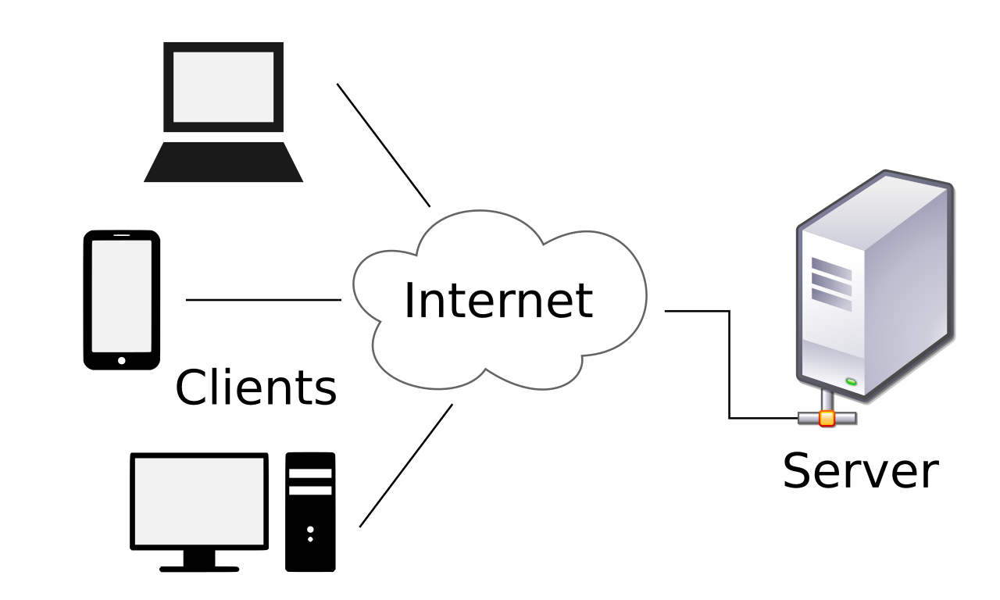

Em 1944 o engenheiro de computadores e matemático Howard H. Aiken (1900-1973) conclui o primeiro computador totalmente eletromecânico, o Harvard Mark 1.
O MARK 1 Era um calculador lento, demorando 3 a 5 segundos para efetuar uma multiplicação, mas era totalmente automático e podia realizar cálculos extensos sem intervenção humana. Ele foi desenvolvido para calcular tabelas de trajetória para fazer a pontaria de canhões de longo alcance, substituindo os demorados cálculos à mão.
No mundo da tecnologia o cliente é o que inicia sessões de comunicação com os servidores que aguardam requisições de entrada. Cliente é o computador que está do outro lado e que foi configurado para utilizar o serviço que é fornecido pelo servidor.
Por exemplo, ao acessarmos uma página da web, a mesma é disponibilizada a partir de um computador servidor. O nosso computador, chamado de cliente, irá realizar as solicitações de acesso às páginas da web que estão armazenadas em um servidor.
Servidores (servers) são computadores no qual foram configurados em uma rede para oferecer algum tipo de serviço.
Os servidores processam e executam solicitações feitas por usuário (client) através de softwares, bancos de dados, envio e recebimento de informações como e-mails, envio de formulários, hospedagem de websites e outros.
Um típico documento escrito em HTML possui três partes: a estrutura principal, o cabeçalho e o corpo.
A estrutura principal deve iniciar com a etiqueta < HTML> e terminar com a etiqueta < /HTML>.
O cabeçalho, delimitado pelas etiquetas < HEAD> e < /HEAD>, destina-se a conter informações sobre o documento - por exemplo, o título do documento (que é construído com o elemento TITLE e aparece no título da janela do navegador).
O corpo do documento, delimitado pelas etiquetas < BODY> e < /BODY>, destina-se ao conteúdo da página.

A lista ordenada < ol> (Ordered List) representa uma lista de itens ordenados. De forma característica esses itens ordenados em uma lista são mostrados com uma contagem que os precede, que pode ser de qualquer tipo, como numerais, letras, algarismos romanos, ou simples símbolos.
Já a lista não-ordenada < ul> (Unordered List) representa uma lista de itens sem ordem rígida, isto é, uma coleção de itens que não trazem uma ordenação numérica e as suas posições, nessa lista, são irrelevantes. Caracteristicamente, os itens em uma lista desordenada são exibidos com um marcador que pode ter várias formas, como um ponto, um círculo, ou um quadrado.
Cada item da lista ol e ul é delimitado pelas etiquetas < li> e < /li> (List Item).